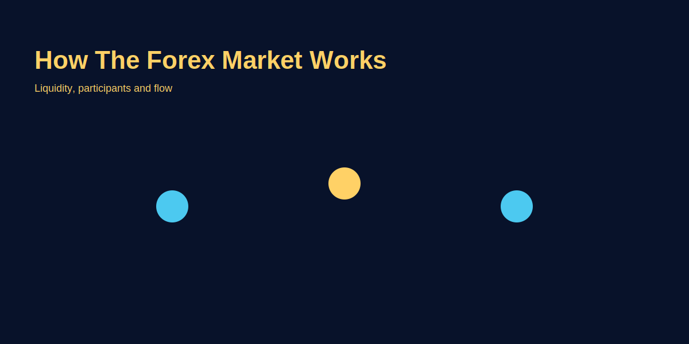

How the Forex Market Works
Problem-based introduction
Forex market ko dekh kar beginners ko lagta hai sab kuch complex hai: market open-close, price formation, participants—sab confuse kar dete hain. Simple hinglish mein samajhna zaroori hai taki aap trading decisions structured tarike se le sakhein. Yeh article step-by-step samjhata hai ki forex kaise kaam karta hai, liquidity kya hoti hai, aur kis tarah se GOLD (XAU/USD) ka price banta hai.
Step-by-step explanation
- Market basics: Forex is the market for exchanging currencies; prices are determined by supply and demand across global participants.
- Price formation: Orders from banks, funds, retail traders affect price. Liquidity providers quote bid/ask; spread is the difference.
- Role of news: Economic data, geopolitics, and monetary policy move currencies and commodities like gold.
- Trading venues: Decentralized OTC market, and exchange-traded derivatives for regulated markets.
Real trading logic (GOLD example)
GOLD price (XAU/USD) moves with risk sentiment and USD strength. Example practical logic:
- Check macro context: USD index rising → GOLD often under pressure; but geopolitical shocks can push GOLD higher.
- Look at liquidity: during Asian session spreads tighter for gold; near US news, spreads can widen.
- Plan a trade: if daily trend bullish and short-term pullback occurs, buy on confirmation with stop below recent low.
Image-based examples (mandatory)
Label: market participants, liquidity flow, price formation arrows.
Common Mistakes
- Assuming retail orders move the market more than institutional flows.
- Not checking session liquidity and trading during low-liquidity hours.
- Ignoring fees and spread impact on short-term strategies.
Pro Tips
- Track liquidity and avoid trading around major macro events unless you trade through structured strategies.
- Use limit entries to get better fills, especially for GOLD which can gap in volatile times.
Risk Warning
Trading markets involves risk. This article is educational; do not trade money you cannot afford to lose.
SEO FAQs
- 1. Kaise forex market 24/5 chalti hai?
- A: Different timezones mein trading hubs open hotey hain; overlapping sessions create continuous market from Monday to Friday.
- 2. Kya retail traders market move karte hain?
- A: Institutional flows matter zyada; retail impact limited but collective retail behaviour can influence short-term moves.
- 3. GOLD price kis se affect hota hai?
- A: USD strength, inflation expectations, and risk sentiment affect GOLD.
- 4. Kya forex market manipulated hota hai?
- A: Market manipulation cases exist but regulated venues and large scale of market reduce persistent manipulation for major pairs.